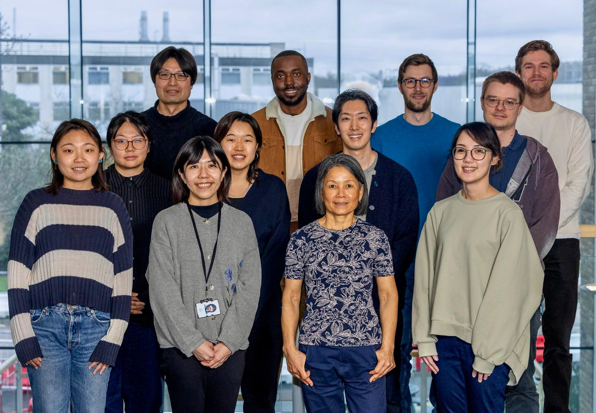
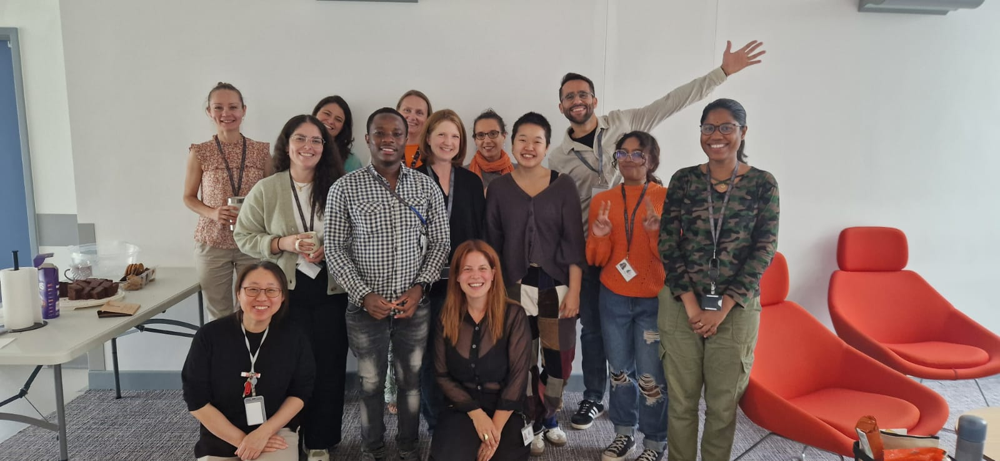
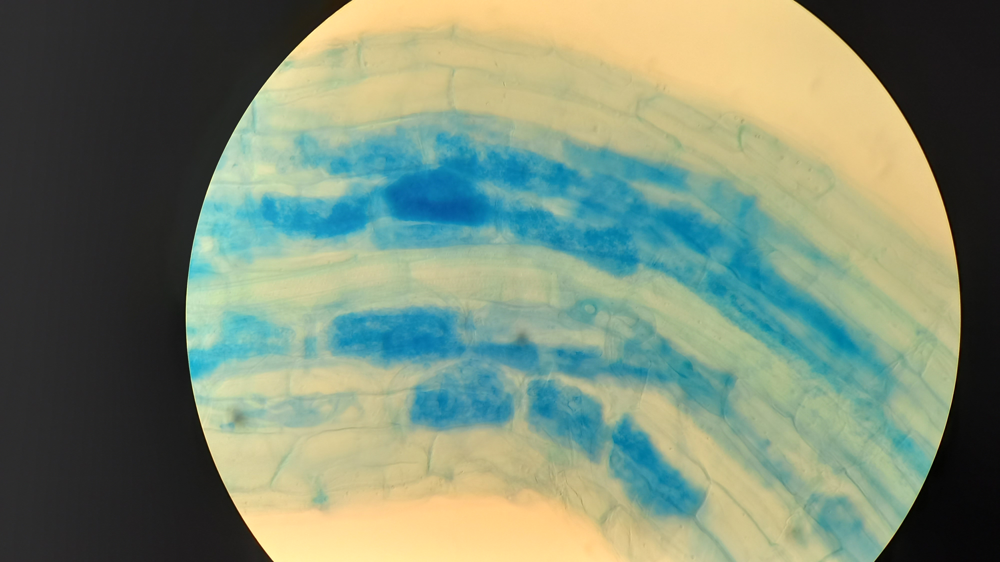
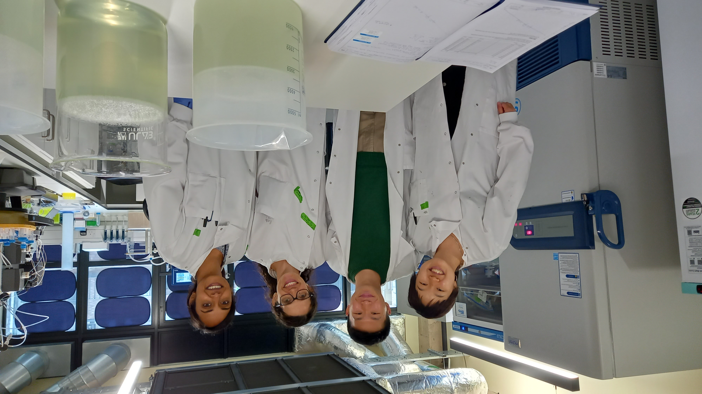

Research Experiences







Education
2024
MPhil in Biological Sciences (Crop Science)
University of Cambridge · Oct 2024 – Aug 2025 · Cambridge, UK
- Hughes Hall Johnston Prize
- Extended essay: "The Phyllosphere Microbiome and its Applications in Sustainable Agriculture"
- Computational Skills Training: R, bash, statistical analysis, data visualisation
2021
BSc Biochemistry
Imperial College London · Oct 2021 – Jun 2024 · London, UK
- Tutored Dissertation: "Behind the Skin of Fruit Ripening"
2017
International Baccalaureate Diploma
Yokohama International School · Aug 2017 – May 2021 · Kanagawa, Japan
- Awarded Global Citizenship Diploma with Distinction
Other Experiences
- YouTube Channel: ren's slice of life (Sep 2021 – )
- Plants @ Cambridge Botanicon 2025 committee (Jan 2025 – Jul 2025)
- Hughes Hall June Event 2025 committee (Jan 2025 – Jun 2025)
- Volunteer: Royal Opera House (Jul 2023 – Jun 2024)
- Volunteer: The Great Exhibition Road Festival 2024 (Jun 2024)
Skills
- Google Workspace & Microsoft Office
- Insta360, DaVinci Resolve
- Languages: English (Native), Japanese (speaking), Spanish (Elementary)